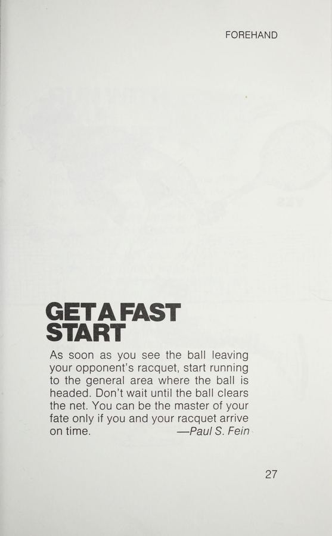

1. Sửa Đổi Cầm Vợt Cấp Tốc: Gốc Rễ Của Mọi Lỗi Kỹ Thuật
Phần lớn những cú đánh lệch hướng, bay bổng ra ngoài sân hoặc rúc lưới không bắt nguồn từ cánh tay mà bắt đầu ngay từ cách bạn đặt bàn tay lên cán vợt. Nhiều người chơi có thói quen cầm vợt quá chặt hoặc để khớp ngón tay trỏ bị trượt lệch trong lúc giằng co điểm số.
Các chuyên gia của tạp chí Tennis Magazine đưa ra những chỉ dẫn khắc phục tức thì:
- Tách ngón trỏ như bóp cò súng (Trigger finger): Tuyệt đối không nắm cán vợt như nắm cây búa với các ngón tay sát khít nhau. Hãy trượt ngón trỏ nhích nhẹ lên phía trên cán vợt. Khoảng cách này tạo ra điểm tựa đòn bẩy nhạy bén, giúp bạn cảm nhận rõ ràng góc nghiêng của mặt vợt tại thời điểm tiếp xúc bóng.
- Độ siết cán vợt (Grip pressure): Trong thang điểm từ 1 đến 10, hãy duy trì độ siết ở mức 4 hoặc 5 trong suốt quá trình chuẩn bị và dẫn vợt ra sau. Chỉ siết lên mức 7 vào đúng tích tắc 0.05 giây khi mặt vợt chạm bóng. Cầm vợt quá chặt từ đầu sẽ làm tê liệt khớp cổ tay và khiến cơ cẳng tay nhanh chóng mỏi nhừ.
- Kiểm tra khớp đốt ngón trỏ (Index knuckle alignment): Đặt khớp gốc ngón trỏ đúng vào cạnh phẳng số 3 cho kiểu cầm Eastern Forehand, cạnh số 4 cho Semi-Western, và cạnh số 2 cho Continental. Sự dịch chuyển dù chỉ một cạnh bát giác cũng làm thay đổi góc phát bóng đi 15 độ.

Hình 1.2: Chu kỳ dẫn vợt hình chữ C (looping backswing), hạ đầu vợt dưới quỹ đạo bóng và tiếp xúc bóng phía trước thân người.2. Cú Thuận Tay Hoàn Hảo (The Flawless Forehand Drive)
Để biến cú thuận tay (forehand) thành một thứ vũ khí ghi điểm ổn định thay vì một nguồn cơn mắc lỗi tự đánh hỏng, hãy tuân thủ chuỗi cơ học ba bước sau:
- Xoay cả thân người sớm (Early unit turn): Ngay khi xác định bóng sang bên phải, đừng vung tay kéo vợt ra sau một cách đơn độc. Hãy xoay cả khung vai và thân trên nghiêng 90 độ so với lưới, tay không cầm vợt duỗi thẳng sang ngang để dẫn hướng và giữ thăng bằng. Khi vai xoay, cây vợt sẽ tự động được đưa vào tư thế sẵn sàng mà không tiêu tốn lực cánh tay.
- Dẫn vợt hình chữ C và hạ đầu vợt (Loop and racquet drop): Dẫn vợt theo một vòng cung mượt mà lên ngang tầm mắt rồi thả rơi đầu vợt xuống thấp hơn quỹ đạo bay của bóng từ 20 đến 30 cm. Chính độ chênh lệch này cho phép bạn đánh bóng từ dưới lên trên, tạo ra lực xoáy cuộn topspin giúp bóng cắm sâu vào sân đối phương.
- Tiếp xúc bóng trước thân người (Contact out in front): Điểm tiếp xúc bóng lý tưởng phải nằm phía trước đầu gối chân trước từ 15 đến 25 cm. Đánh bóng ở vị trí này cho phép toàn bộ trọng lượng cơ thể được dồn vào quả bóng, đồng thời bảo vệ khớp vai khỏi áp lực vặn xoắn có hại.
- Đà kết thúc trọn vẹn (Full follow-through): Đưa vợt vươn dài theo hướng bóng trước khi cuốn tròn qua vai đối diện, khuỷu tay chỉ thẳng vào sân đối phương như một ống ngắm.
Nếu cú thuận tay của bạn liên tục bay quá vạch cuối sân, nguyên nhân 90% là do bạn mở mặt vợt ngửa lên trời quá sớm trước khi chạm bóng. Hãy tập thói quen khép nhẹ mặt vợt hướng xuống mặt sân chừng 15 độ trong giai đoạn hạ đầu vợt, sau đó miết vợt từ dưới lên trên xuyên qua tâm bóng.